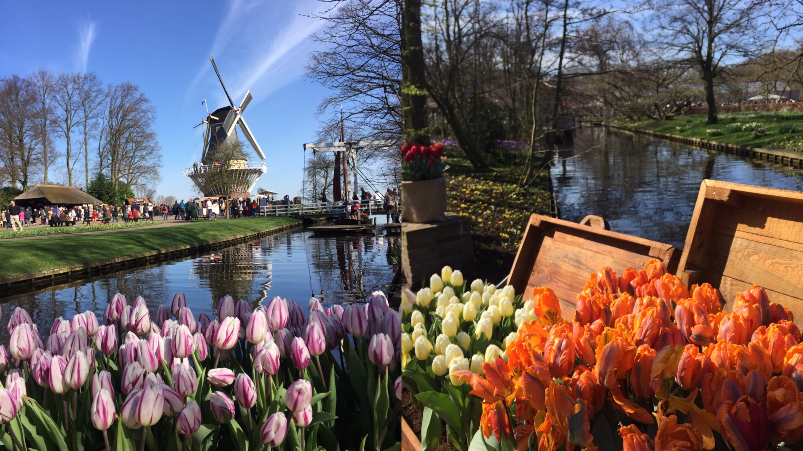

<div class="About Me">
  <script async src="https://www.googletagmanager.com/gtag/js?id=UA-108085250-1"></script>
<script>
  window.dataLayer = window.dataLayer || [];
  function gtag(){dataLayer.push(arguments);}
  gtag('js', new Date());

  gtag('config', 'UA-108085250-1');
  
</script>

I was born in Shanxi, China.


I spent seven years studying in Chengdu, Sichuan, and I have many memories there.


I came to Delft, the Netherlands, and started to explore the wider world.
